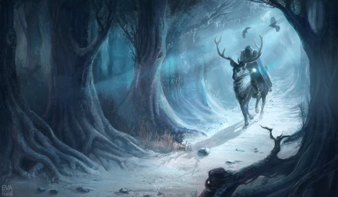

A Song of Ice and Fire
A Game of Thrones
A Game of Thrones is set in the Seven Kingdoms of Westeros, a land reminiscent of Medieval Europe. In Westeros the seasons last for years, sometimes decades, at a time.
Fifteen years prior to the novel, the Seven Kingdoms were torn apart by a civil war, known alternately as "Robert's Rebellion" and the "War of the Usurper." Prince Rhaegar Targaryen kidnapped Lyanna Stark, arousing the ire of her family and of her betrothed, Lord Robert Baratheon (the war's titular rebel). The Mad King, Aerys II Targaryen, had Lyanna's father and eldest brother executed when they demanded her safe return. Her second brother, Eddard, joined his boyhood friend Robert Baratheon and Jon Arryn, with whom they had been fostered as children, in declaring war against the ruling Targaryen dynasty, securing the allegiances of House Tully and House Arryn through a network of dynastic marriages (Lord Eddard to Catelyn Tully and Lord Arryn to Lysa Tully). The powerful House Tyrell continued to support the King, but House Lannister and House Martell both stalled due to insults against their houses by the Targaryens. The civil war climaxed with the Battle of the Trident, when Prince Rhaegar was killed in battle by Robert Baratheon. The Lannisters finally agreed to support King Aerys, but then brutally turned against him, sacking the capital at King's Landing. Jaime Lannister of the Kingsguard betrayed and murdered King Aerys and House Lannister swore loyalty to Robert Baratheon. The Tyrells and remaining royalists surrendered and Robert Baratheon was declared King of the Seven Kingdoms. Unfortunately, during the war, Lyanna Stark had died, apparently of illness shortly after her brother captured the fortress where she'd been held captive; Robert Baratheon instead married Cersei Lannister to cement the alliance with her House. Despite Robert's victory, the Mad King's younger son Viserys and only daughter Daenerys were taken to safety across the sea by loyal retainers. After the war House Martell chose a path of isolation, since Prince Doran's sister Elia Martell (Prince Rhaegar's wife) and her young children had been killed by knights sworn to House Lannister during the storming of the capital.
>Six years later, King Robert proved his resolve by defeating a rebellion by Lord Balon Greyjoy of the Iron Islands. Balon's two eldest sons were killed and his youngest son, Theon, was given to the care of Eddard Stark as a ward.
A Clash of Kings
A Storm of Swords
The novel begins in the final months of 299 AC and carries on into 300 AC.
A Feast for Crows
The novel spans several months of the year 300 AC.
I will be better at editing this if I stop wasting my time onFacebook